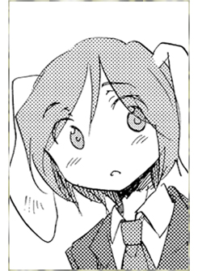

- Welcome to Touhou Wiki!
- Please register to edit. For assistance, check in with our Discord server or IRC channel.
Reisen
| レイセン Reisen ɺ̠e̞ːsẽ̞ɴ (♫) Rei'sen, Reysen | |
|---|---|
|
Reisen in Silent Sinner in Blue
| |
| Species | |
| Occupation |
Lunar Defense Corps Trainee |
| Location |
Moon capital |
Appearances | |
| Print Works | |
| |
Reisen (レイセン) is a lunar rabbit from the Touhou Bougetsushou series.
General Information[edit]
Abilities[edit]
- Moon rabbit abilities
Moon rabbits can send "ESP waves" and receive them with their ears, forming a sort of psychic network where they share feelings and rumors.
- Vanishing(?)
In Chapter 2 of Silent Sinner in Blue, Reisen is shown to vanish from Reimu's sight and appear behind her. It is unclear whether this is a display of speed, teleportation or some other ability.
Background Information[edit]
Name[edit]
"Reisen" (レイセン) is in fact not her original name, but is the name she received when she became the Watatsuki sisters' pet. Her original name has not been revealed. The unofficial romaji "Reisen" is used to distinguish the name from reisen (鈴仙), used in Reisen Udongein Inaba's name, through different spelling with identical pronunciation.
Design[edit]
Reisen has short hair, light purple, and red eyes. White fluffy rabbit ears, lacking the button-like decorations normally worn by members of the Lunar Defense Corps. Wears a black business suit over her shirt, similar to Reisen Udongein Inaba, and a gray skirt.
Story[edit]
- Silent Sinner in Blue
- Main article: Silent Sinner in Blue
Reisen fled to Earth from the Moon early in the events of Silent Sinner in Blue. She was nursed back to health by Reimu after being injured by space debris during her travel. Because of this, Eirin Yagokoro was able to learn of her presence. Since Reisen still had attachments to the moon, Eirin sent her back along with a letter for the Watatsuki sisters, warning them of Yukari Yakumo's imminent invasion. Since fleeing to Earth was a crime, she was sentenced to live as the Watatsuki sisters' pet where she was then given the name Reysen, the same name as their former pet (who is currently known as Reisen Udongein Inaba).
Reysen later appears alongside Watatsuki no Toyohime when she confronts Yukari Yakumo, and then appears again attempting to deliver a letter to Eirin Yagokoro before being confronted by Tewi.
- Cage in Lunatic Runagate
- Main article: Cage in Lunatic Runagate
In the first chapter of Cage in Lunatic Runagate, Eirin Yagokoro spots Reisen's Lunar Veil as she travels to Earth. Shortly afterwards, Reimu Hakurei arrives claiming to have found an injured rabbit, but none of Tewi's rabbits are missing. Connecting the dots, Eirin convinces Reimu that the rabbit is actually a fox or tanuki trying to trick her, before making preparations to meet up with Reisen herself.
Reisen later appears as the viewpoint character of chapter six where she reminisces on the events which lead her to run away from the moon, as well as the new things she's been experiencing under the Watatsuki sisters' tutelage. Reisen observes a battle between Marisa Kirisame and Watatsuki no Yorihime, after which Yorihime sends her to prepare a letter to Eirin. Unable to find Toyohime at the Watatsukis' mansion, Reisen writes the letter by herself. However, after leaving the mansion she somehow encounters Toyohime in a dark forest, apparently on Earth, and is told to "watch what's about to happen".
- Inaba of the Moon and Inaba of the Earth
- Main article: Inaba of the Moon and Inaba of the Earth
In Inaba of the Moon and Inaba of the Earth, she appeared alongside the Watatsuki sisters during their visit to Earth. Yorihime forces both Reysen and Reisen Udongein Inaba to participate in training sessions.
Gallery[edit]
Reisen training outfit with bayonet in Silent Sinner in Blue
Reisen in Cage in Lunatic Runagate
The two Reisens in Inaba of the Moon & Inaba of the Earth

Reisen's hair and eye color on the back cover of Inaba of the Moon & Inaba of the Earth
Relationships[edit]
- Watatsuki no Yorihime (Owner)
- Watatsuki no Toyohime (Owner)
- Reisen Udongein Inaba (Namesake)
Additional Information[edit]
- During her first appearance in Silent Sinner in Blue chapters 1-2, this rabbit who would later be given the name Reysen wore a dress very similar to Tewi Inaba's because she wanted to disguise herself as an Earth rabbit.
Fandom[edit]
Official Profiles[edit]
|  | レイセン （れいせん） 月の兎／能力：？？？ 漫画２話で登場した月の兎。月から幻想郷へ逃げたが、永 |
Reisen (Reisen) Moon Rabbit/Ability:???
A moon rabbit who appeared in chapter two of Silent Sinner in Blue. She fled the moon to Gensokyo, but was ordered by Eirin to return to the moon with a letter. An unexpected fate awaited her upon her return to the moon ... ... |
Official Sources[edit]
- 2007/06/08 ~ 2009/04/09Silent Sinner in Blue
- 2008/09/25 Cage in Lunatic Runagate - Chapter 6
- 2009/05/22 ~ 2009/11/22 Inaba of the Moon and Inaba of the Earth - Chapter 24~30
| This page is part of Project Characters, a Touhou Wiki project that aims to write proper descriptions for all official characters of Touhou Project. Please keep the character page guidelines in mind when contributing. |